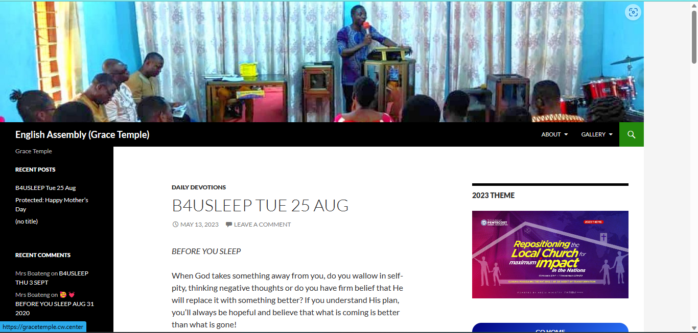
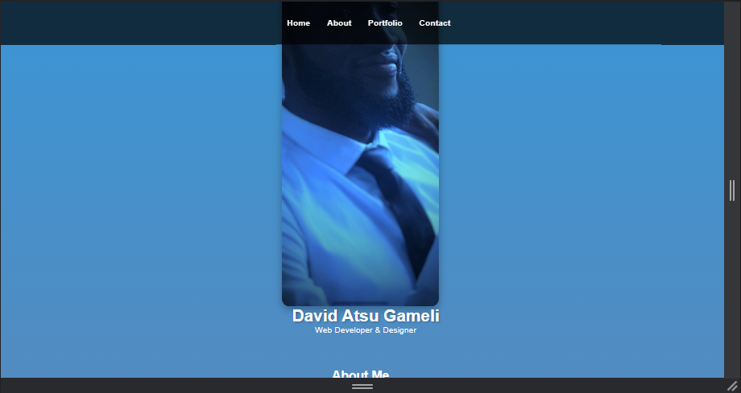
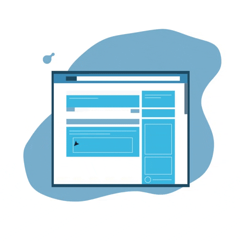
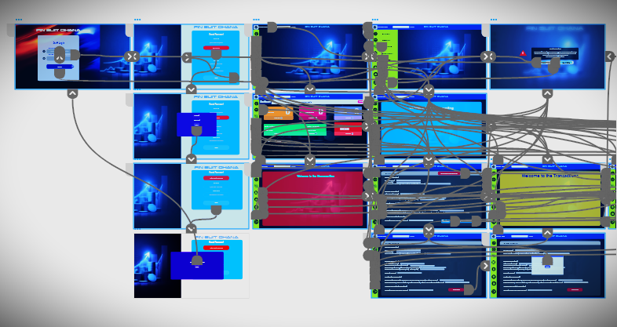
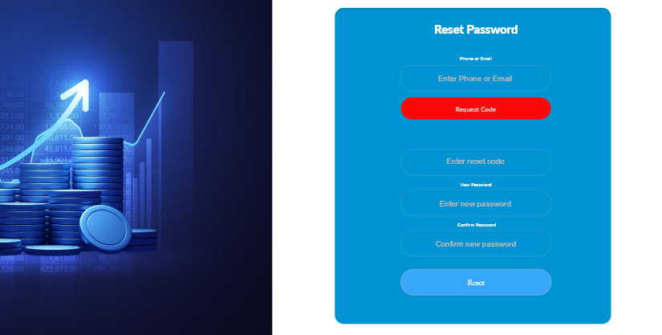
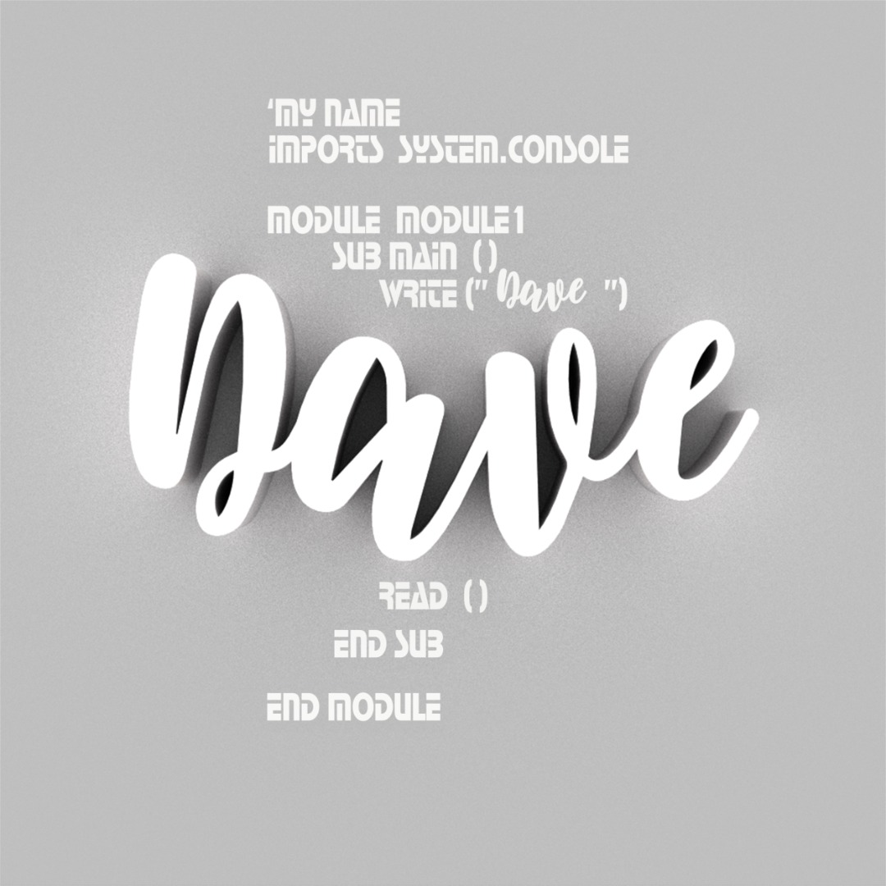

Grace Temple Church Website
A content-managed website for a local church, giving members a reliable place for service times, announcements, and contact. Built on a lightweight CMS with a mobile-first layout.
Visit siteIT Professional & Web Developer · Accra, Ghana
I build web interfaces and technical systems that are fast, accessible, and maintainable. My work spans frontend development, UI/UX design, and day-to-day technical support for teams and small businesses.
I'm an IT professional with a focus on developing and optimizing technology solutions. My background covers system support, problem solving, and frontend engineering — I care as much about the person using a product as I do about the code behind it.
I work primarily with HTML, CSS, and JavaScript, and I use Adobe XD for wireframing and prototyping before writing a line of code. I'm currently open to freelance work and full-time roles.
A few projects that reflect how I build and think.

A content-managed website for a local church, giving members a reliable place for service times, announcements, and contact. Built on a lightweight CMS with a mobile-first layout.
Visit site
This site. A hand-written, dependency-light portfolio built with semantic HTML and plain CSS. No frameworks, no build step — just fast, accessible markup.

End-to-end interactive prototypes for a login and password-reset flow, covering wireframes, states, and validation. Used to communicate behaviour to stakeholders before implementation.
Open Adobe XD prototype →
A small but complete user flow for password reset — request, verification, and success states — designed to reduce support tickets and hold up under real-world error cases.

A login screen designed with clarity and security in mind — clear focus states, sensible error messaging, and behaviour that works on both touch and keyboard.

A small interactive quiz that helps beginners test their cybersecurity knowledge. Straightforward, keyboard-friendly, and quick to load.
Try the quizSmaller builds, side projects, and live sites worth a look.
A single-page digital business card — contact details, clean layout, no dependencies.
An interactive quiz that helps beginners test their security knowledge with instant feedback.
A content-managed site for a local church community.
A short one-line description of what the site is and what it does.
The fastest way to reach me is by email. I usually reply within one working day.